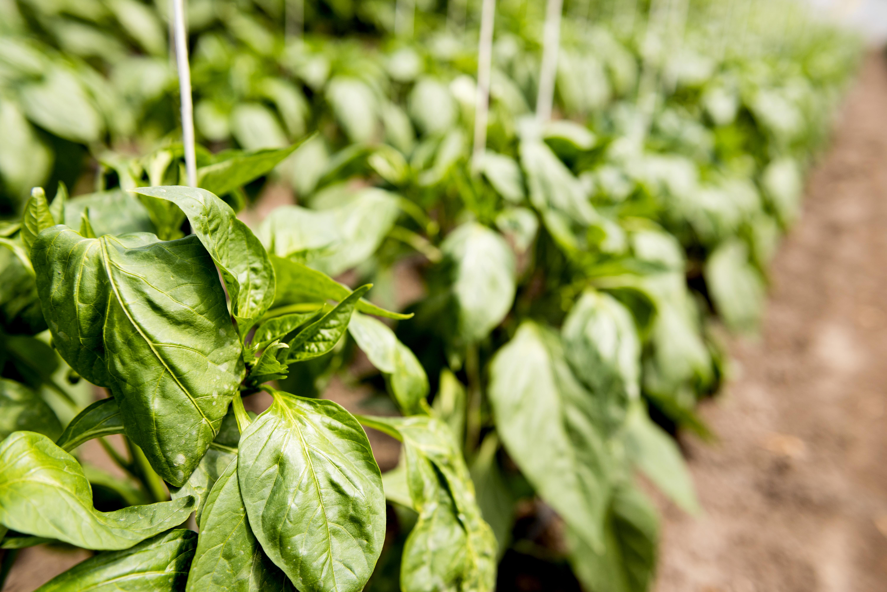

Jenis Tanaman
Tanaman Hias Janda Bolong

Janda Bolong, atau yang dikenal dengan nama ilmiah Monstera adansonii, adalah salah satu tanaman hias populer yang dikenal karena keunikan daunnya yang berlubang-lubang. Tanaman ini sering disebut sebagai "Swiss cheese plant" karena lubang-lubang pada daunnya menyerupai keju Swiss.
Karakteristik Tanaman
Tanaman Janda Bolong memiliki daun hijau tua yang mengkilap dengan lubang-lubang yang terbentuk secara alami. Lubang-lubang ini membuat tanaman ini sangat menarik dan berbeda dari tanaman hias lainnya. Janda Bolong bisa tumbuh merambat, sehingga sering ditanam dalam pot gantung atau dengan penopang.
Perawatan
Merawat Janda Bolong relatif mudah, asalkan Anda mengikuti beberapa panduan dasar:
- Penyiraman: Janda Bolong menyukai kelembapan, tetapi hindari penyiraman berlebihan. Pastikan tanah tetap lembab namun tidak basah.
- Cahaya: Tanaman ini tumbuh baik di tempat yang mendapatkan cahaya terang tetapi tidak langsung. Cahaya matahari langsung bisa merusak daunnya.
- Pemupukan: Berikan pupuk seimbang setiap bulan untuk mendukung pertumbuhan yang sehat.
- Pengendalian Hama: Periksa daun secara berkala untuk memastikan tidak ada hama seperti kutu daun atau tungau laba-laba.
Tanaman Berbuah Stroberi

Stroberi, dengan nama ilmiah Fragaria × ananassa, adalah tanaman berbuah yang sangat populer karena buahnya yang manis dan segar. Stroberi bisa tumbuh baik di dalam pot maupun di kebun, dan menghasilkan buah yang lezat untuk dikonsumsi segar atau diolah menjadi berbagai produk.
Karakteristik Tanaman
Tanaman stroberi memiliki daun hijau bergerigi dan bunga putih yang indah. Buahnya berwarna merah cerah dengan biji kecil di permukaan. Stroberi tumbuh merambat dan membentuk stolon atau sulur yang menyebar ke tanah sekitarnya.
Perawatan
Untuk mendapatkan hasil terbaik, perawatan stroberi meliputi:
- Penyiraman: Siram secara teratur untuk menjaga kelembapan tanah, tetapi hindari genangan air.
- Cahaya: Stroberi membutuhkan cahaya matahari penuh untuk menghasilkan buah yang optimal.
- Pemupukan: Gunakan pupuk kaya fosfor dan kalium untuk mendukung pembentukan bunga dan buah.
- Pengendalian Hama: Perhatikan serangan hama seperti siput dan kutu daun, serta gunakan insektisida alami jika diperlukan.
Tanaman Sayur Bayam
Bayam, dengan nama ilmiah Amaranthus spp., adalah salah satu tanaman sayur yang mudah tumbuh dan sangat bergizi. Bayam bisa ditanam di pekarangan rumah atau dalam pot, dan daunnya sering digunakan dalam berbagai masakan, baik mentah maupun dimasak.
Karakteristik Tanaman
Tanaman bayam memiliki daun hijau lebar dan batang yang tegak. Tumbuh dengan cepat dan bisa dipanen dalam waktu beberapa minggu setelah penanaman. Bayam kaya akan vitamin, mineral, dan serat.
Perawatan
Perawatan bayam cukup sederhana, dengan langkah-langkah berikut:
- Penyiraman: Siram tanaman secara teratur, terutama selama musim kering, untuk menjaga kelembapan tanah.
- Cahaya: Bayam tumbuh baik di tempat yang mendapatkan cahaya matahari penuh atau teduh parsial.
- Pemupukan: Gunakan pupuk organik atau kompos untuk memberikan nutrisi tambahan.
- Pengendalian Hama: Waspadai hama seperti ulat dan kutu daun, serta gunakan pestisida alami jika diperlukan.